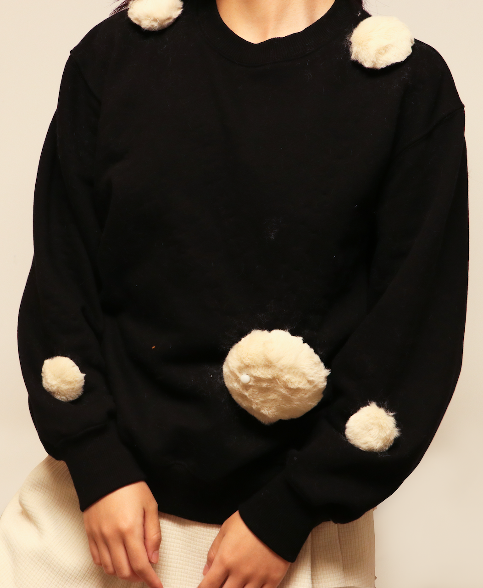
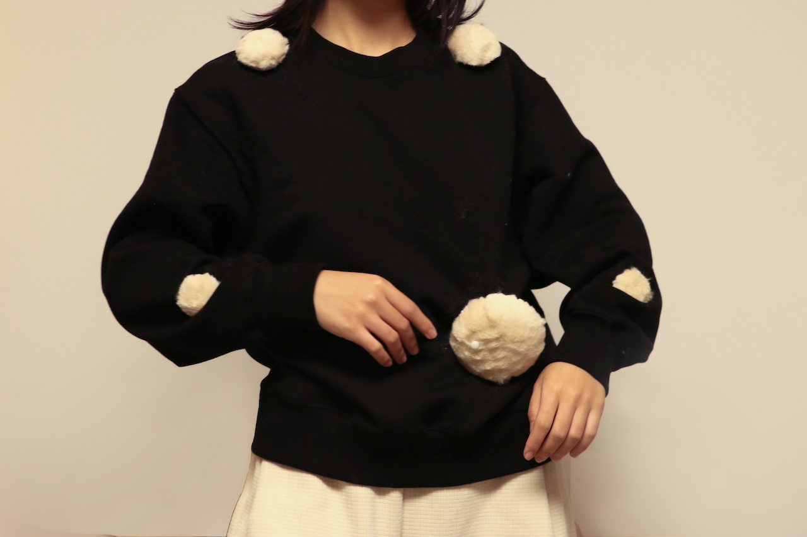

Easefit
An Interactive Sonic Design with E-textile.
 My Portfolio

About
An Interactive Sonic Design with E-textile.
Electronic textiles (e-textiles) are an emerging trend that has been under development
for years but has yet to become a common consumer product.
And listening, one of humans' important sensory features,
contributes to how we perceive and experience the world.
Our project focuses on exploring the potential of combining e-textiles with sonic interaction
to develop products that enhance the human sensory experience.
Our goal is to investigate how e-textiles and sonic interaction
can be utilized to provide a playful and relaxing experience for desk-workers at home.
Using an iterative design method, we brainstormed potential applications
for sonic interaction with e-textiles and chose work-from-home as our theme.
We developed several prototypes that reflect our concepts and expertise.
We also conducted a comprehensive evaluation of our prototypes to
determine their effectiveness in delivering a playful and relaxing experience
for desk-workers at home. Our project contributes to the field of e-textiles
by highlighting the potential of sonic interaction and its ability to enhance human sensory experience,
and by providing design strategies for future e-textile products that prioritize user experience.
Related persons
Zixi Geng. Author.
Master Student from Industrial Design Programme.
Lin Luo. Author.
Master Student from Product Development Programme.
K{\i}van\c{c} Tatar. Supervisor.
Assistant Professor at Chalmers University of Technology.